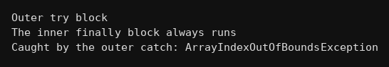

package exceptions;
public class Q308 {
public static void main(String[] args) {
try{
System.out.println("Outer try block");
try{
int a[] = new int[2];
a[5] = 10; // yaha error
}
catch(ArithmeticException e){
System.out.println("Inner catch block (this will not run)");
}
finally{
System.out.println("The inner finally block always runs");
}
}
catch(Exception e){
System.out.println("Caught by the outer catch: "+e.getClass().getSimpleName());
}
}
}